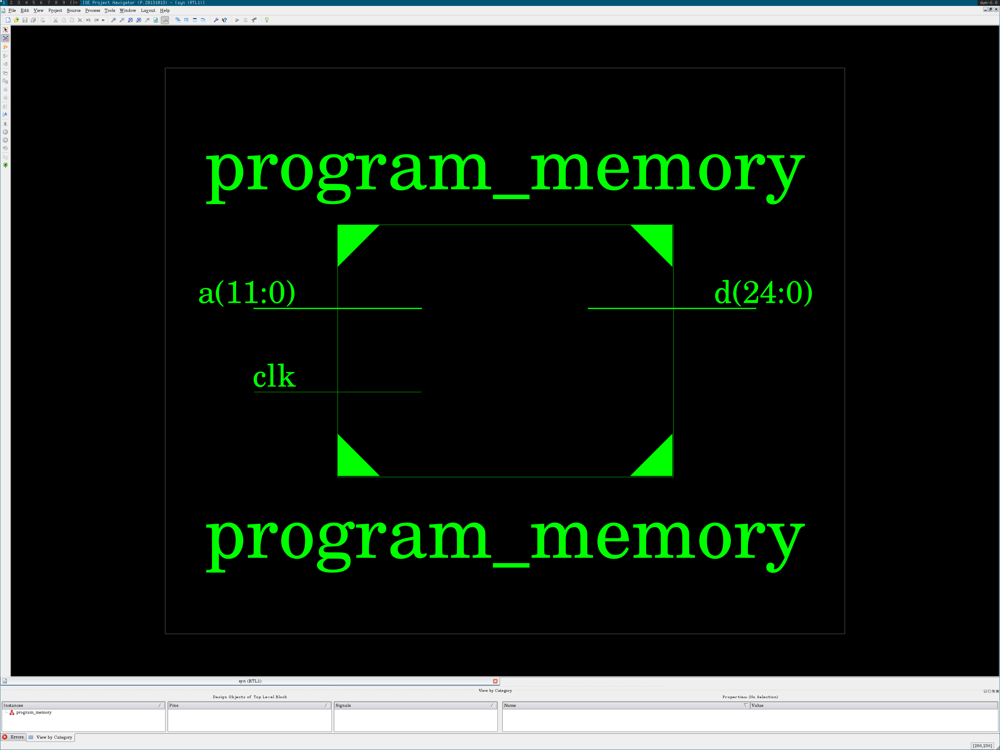
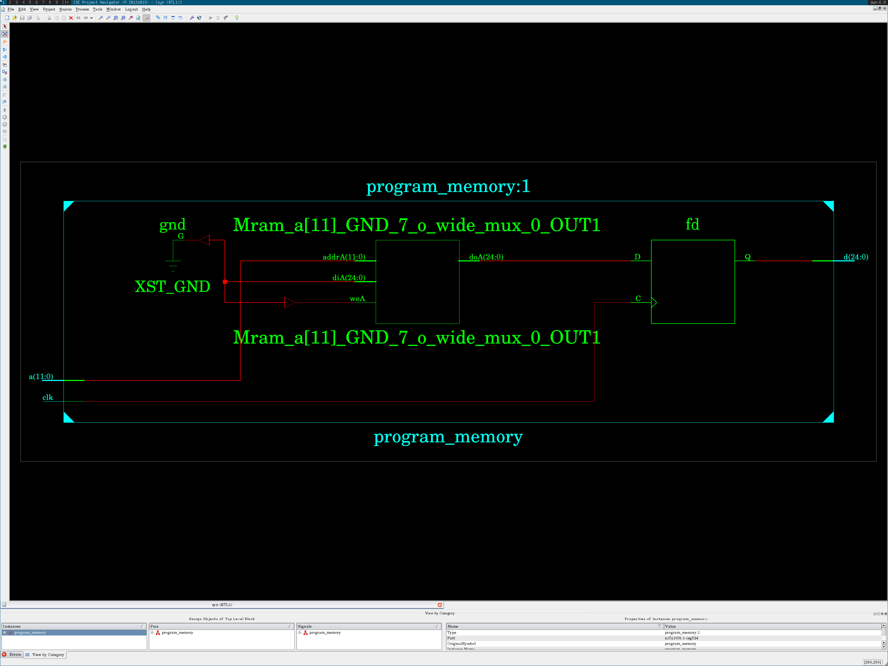

Arch program-memory-arch.vhdl
back to nav
library ieee;
use ieee.std_logic_1164.all;
use ieee.numeric_std.all;
library work;
use work.math.log;
use work.conv.uint;
entity program_memory is
generic (
program_size: positive := 4096;
data_width: positive := 25
);
port (
clk: in std_logic;
a: in std_logic_vector(log(program_size, 2)-1 downto 0);
d: out std_logic_vector(data_width-1 downto 0)
);
end entity program_memory;
architecture program_memory_arch of program_memory is
type mem is array (0 to program_size-1) of std_logic_vector(d'range);
constant rom: mem := (
0 => "00001" & "0000" & "0000" & "0000" & "0000" & "0101",
1 => "00001" & "0001" & "0000" & "0000" & "0000" & "1010",
2 => "00000" & "0001" & "0001" & "0000" & "XXXX" & "0000",
3 => "00011" & "0001" & "0000" & "0000" & "0000" & "0101",
4 => "10011" & "XXXX" & "0000" & "0000" & "0000" & "0010",
5 => "11111" & "1111" & "1111" & "1111" & "1111" & "1111",
4095 =>
"00000" & "0000" & "0000" & "0000" & "0000" & "0000",
others => (others => '1')
);
begin
process (clk)
begin
if (rising_edge(clk)) then
d <= rom(uint(a));
end if;
end process;
end architecture program_memory_arch;
back to nav
Test program-memory-test.vhdl
back to nav
library std;
use std.textio.all;
library ieee;
use ieee.std_logic_1164.all;
use ieee.numeric_std.all;
library work;
use work.math.log;
use work.ctype.num_base;
use work.conv.str2int;
use work.conv.int2str;
use work.conv.stdlv2str;
use work.conv.ustdlv;
use work.conv.uint;
entity program_memory_test is
generic (
test_in: string := "program-memory-test-in.txt";
test_out: string := "program-memory-test-out.txt"
);
end program_memory_test;
architecture program_memory_test_arch of program_memory_test is
constant clk_period: time := 250 ns;
signal clk_en: std_logic := '1';
signal clk: std_logic;
constant program_size: positive := 4096;
constant data_width: positive := 25;
signal a: std_logic_vector(log(program_size, 2)-1 downto 0);
signal d: std_logic_vector(data_width-1 downto 0);
alias opcode: std_logic_vector(data_width-1 downto 20) is
d(data_width-1 downto 20);
alias data4: std_logic_vector(19 downto 16) is d(19 downto 16);
alias data3: std_logic_vector(15 downto 12) is d(15 downto 12);
alias data2: std_logic_vector(11 downto 8) is d(11 downto 8);
alias data1: std_logic_vector( 7 downto 4) is d( 7 downto 4);
alias data0: std_logic_vector( 3 downto 0) is d( 3 downto 0);
begin
clk0: entity work.clock_pulse
generic map (period => clk_period)
port map (enable => clk_en, clock => clk);
program_memory0: entity work.program_memory
generic map (
program_size => program_size,
data_width => data_width
)
port map (
clk => clk,
a => a,
d => d
);
process
file f0: text open read_mode is test_in;
file f1: text open write_mode is test_out;
variable l0, l1: line;
variable ln: positive := 1;
variable i: positive;
variable n: integer;
variable parsed: boolean;
begin
if endfile(f0) then
clk_en <= '0';
wait;
end if;
wait until rising_edge(clk);
parsed := false;
readline(f0, l0);
if l0'length /= 0 and l0(l0'low) /= '#' then
i := 1;
-- a
str2int(l0.all(i to l0.all'right), i, n);
a <= ustdlv(n, a'length);
parsed := true;
wait until rising_edge(clk);
else
writeline(f1, l0);
end if;
if parsed then
wait until rising_edge(clk);
write(l1, int2str(uint(a), hex), right, 10);
write(l1, "0b" & stdlv2str(opcode), right, 10);
write(l1, "0b" & stdlv2str(data4), right, 9);
write(l1, "0b" & stdlv2str(data3), right, 9);
write(l1, "0b" & stdlv2str(data2), right, 9);
write(l1, "0b" & stdlv2str(data1), right, 9);
write(l1, "0b" & stdlv2str(data0), right, 9);
writeline(f1, l1);
end if;
ln := ln + 1;
end process;
end program_memory_test_arch;
back to nav
Test input program-memory-test-in.txt
back to nav
# format:
# addr | opcode [19-16] [15-12] [11- 8] [ 7- 4] [ 3- 0]
# hex | bin bin bin bin bin bin
0x0000
0x0001
0x0002
0x0003
0x0004
0x0002
0x0003
back to nav
Test output program-memory-test-out.txt
back to nav
# format:
# addr | opcode [19-16] [15-12] [11- 8] [ 7- 4] [ 3- 0]
# hex | bin bin bin bin bin bin
0x0 0b00001 0b0000 0b0000 0b0000 0b0000 0b0101
0x1 0b00001 0b0001 0b0000 0b0000 0b0000 0b1010
0x2 0b00000 0b0001 0b0001 0b0000 0bXXXX 0b0000
0x3 0b00011 0b0001 0b0000 0b0000 0b0000 0b0101
0x4 0b10011 0bXXXX 0b0000 0b0000 0b0000 0b0010
0x2 0b00000 0b0001 0b0001 0b0000 0bXXXX 0b0000
0x3 0b00011 0b0001 0b0000 0b0000 0b0000 0b0101
back to nav
Test waveform program-memory-test.png
back to nav

back to nav
Schematic pinout program-memory-nexys4-pinout.png
back to nav

back to nav
Schematic full program-memory-nexys4-schema.png
back to nav

back to nav
Pin placement (UCF) program-memory-nexys4.ucf
back to nav
net "clk" loc="E3" | iostandard = "LVCMOS33";
net "a[11]" loc="P4" | iostandard = "LVCMOS33";
net "a[10]" loc="P3" | iostandard = "LVCMOS33";
net "a[9]" loc="R3" | iostandard = "LVCMOS33";
net "a[8]" loc="T1" | iostandard = "LVCMOS33";
net "a[7]" loc="T3" | iostandard = "LVCMOS33";
net "a[6]" loc="U2" | iostandard = "LVCMOS33";
net "a[5]" loc="V2" | iostandard = "LVCMOS33";
net "a[4]" loc="U4" | iostandard = "LVCMOS33";
net "a[3]" loc="V5" | iostandard = "LVCMOS33";
net "a[2]" loc="V6" | iostandard = "LVCMOS33";
net "a[1]" loc="V7" | iostandard = "LVCMOS33";
net "a[0]" loc="R5" | iostandard = "LVCMOS33";
net "d[24]" loc="H6" | iostandard = "LVCMOS33";
net "d[23]" loc="K5" | iostandard = "LVCMOS33";
net "d[22]" loc="L3" | iostandard = "LVCMOS33";
net "d[21]" loc="N1" | iostandard = "LVCMOS33";
net "d[20]" loc="L5" | iostandard = "LVCMOS33";
net "d[19]" loc="L4" | iostandard = "LVCMOS33";
net "d[18]" loc="K3" | iostandard = "LVCMOS33";
net "d[17]" loc="M2" | iostandard = "LVCMOS33";
net "d[16]" loc="L6" | iostandard = "LVCMOS33";
net "d[15]" loc="P2" | iostandard = "LVCMOS33";
net "d[14]" loc="R2" | iostandard = "LVCMOS33";
net "d[13]" loc="U1" | iostandard = "LVCMOS33";
net "d[12]" loc="P5" | iostandard = "LVCMOS33";
net "d[11]" loc="R1" | iostandard = "LVCMOS33";
net "d[10]" loc="V1" | iostandard = "LVCMOS33";
net "d[9]" loc="U3" | iostandard = "LVCMOS33";
net "d[8]" loc="V4" | iostandard = "LVCMOS33";
net "d[7]" loc="U6" | iostandard = "LVCMOS33";
net "d[6]" loc="U7" | iostandard = "LVCMOS33";
net "d[5]" loc="T4" | iostandard = "LVCMOS33";
net "d[4]" loc="T5" | iostandard = "LVCMOS33";
net "d[3]" loc="T6" | iostandard = "LVCMOS33";
net "d[2]" loc="R8" | iostandard = "LVCMOS33";
net "d[1]" loc="V9" | iostandard = "LVCMOS33";
net "d[0]" loc="T8" | iostandard = "LVCMOS33";
back to nav
Source code of util-arch.vhdl
back to nav
--------------------------
-- Clock for testbenchs --
--------------------------
library ieee;
use ieee.std_logic_1164.all;
entity clock_pulse is
generic (period: time);
port (enable: in std_logic; clock: out std_logic);
end clock_pulse;
architecture clock_pulse_arch of clock_pulse is
signal clk: std_logic := '0';
begin
clk <=
not clk after period/2 when enable = '1' else
'0' when enable = '0';
clock <= clk;
end clock_pulse_arch;
--------------------------
-- A 2to1 mux ------------
--------------------------
library ieee;
use ieee.std_logic_1164.all;
entity mux2to1 is
generic (size: positive);
port (
a: in std_logic_vector(size-1 downto 0);
b: in std_logic_vector(size-1 downto 0);
s: in std_logic;
z: out std_logic_vector(size-1 downto 0)
);
end mux2to1;
architecture mux2to1_arch of mux2to1 is
begin
process (s, a, b)
begin
case s is
when '0' => z <= a;
when others => z <= b;
end case;
end process;
end mux2to1_arch;
---------------------
-- Math functions ---
---------------------
package math is
function log(x: positive; base: positive) return natural;
end;
package body math is
function log(x: positive; base: positive) return natural is
begin
if (base = 1) then
report "log base 1 is not appropriate" severity error;
elsif (x = 0) then
report "log arg 0 is not appropriate" severity error;
end if;
if x < base then
return 0;
else
return 1 + log(x/base, base);
end if;
end log;
end package body;
---------------------
-- Character types --
---------------------
package ctype is
type num_base is (bin, oct, dec, hex);
function max(f: num_base) return natural;
function isspace(x: character) return boolean;
function isstdl(x: character) return boolean;
function isdigit(x: character; f: num_base := dec) return boolean;
end;
package body ctype is
function max(f: num_base) return natural is
begin
case f is
when bin => return 2;
when oct => return 8;
when dec => return 10;
when hex => return 16;
end case;
end max;
function isspace(x: character) return boolean is
begin
case x is
when ' '|HT|LF|VT|FF|CR => return true;
when others => return false;
end case;
end isspace;
function isstdl(x: character) return boolean is
begin
case x is
when '0'|'1' => return true;
when 'l'|'h'|'u'|'z'|'w'|'x'|'-' => return true;
when 'L'|'H'|'U'|'Z'|'W'|'X'|'-' => return true;
when others => return false;
end case;
end isstdl;
function isdigit(x: character; f: num_base := dec) return boolean is
begin
case f is
when bin =>
case x is
when '0'|'1' => return true;
when others => return false;
end case;
when oct =>
case x is
when '0'|'1'|'2'|'3'|'4'|'5'|'6'|'7' => return true;
when others => return false;
end case;
when dec =>
case x is
when '0'|'1'|'2'|'3'|'4'|'5'|'6'|'7' => return true;
when '8'|'9' => return true;
when others => return false;
end case;
when hex =>
case x is
when '0'|'1'|'2'|'3'|'4'|'5'|'6'|'7' => return true;
when '8'|'9' => return true;
when 'a'|'b'|'c'|'d'|'e'|'f' => return true;
when 'A'|'B'|'C'|'D'|'E'|'F' => return true;
when others => return false;
end case;
end case;
end isdigit;
end package body;
--
-- Conversion library
--
library ieee;
use ieee.std_logic_1164.all;
use ieee.numeric_std.all;
use work.ctype.all;
package conv is
function int(x: std_logic_vector) return integer;
function int(x: std_logic) return integer;
function uint(x: std_logic_vector) return natural;
function uint(x: std_logic) return natural;
function stdlv(x: integer; l: positive) return std_logic_vector;
function ustdlv(x: natural; l: positive) return std_logic_vector;
function chr2num(x: character; f: num_base := dec; xmap: bit := '0')
return integer;
function num2chr(x: integer; f: num_base := dec)
return character;
function int2str(x: integer; f: num_base := dec) return string;
function stdl2chr(x: std_logic) return character;
function stdlv2str(x: std_logic_vector) return string;
procedure str2int( -- number can be bin, oct, dec or hex
nstr: in string; -- string to be converted
endstr: out positive; -- store index of first non-valid char
num: out integer; -- store converted number
xmap: in bit := '0' -- what to do with U, X, Z, etc
);
end;
package body conv is
function int(x: std_logic_vector) return integer is
begin
return to_integer(signed(x));
end int;
function int(x: std_logic) return integer is
begin
return uint("0" & x); -- a bit is unsigned anyway
end int;
function uint(x: std_logic_vector) return natural is
begin
return to_integer(unsigned(x));
end uint;
function uint(x: std_logic) return natural is
begin
return uint("0" & x); -- a bit is unsigned anyway
end uint;
function stdlv(x: integer; l: positive) return std_logic_vector is
begin
return std_logic_vector(to_signed(x, l));
end stdlv;
function ustdlv(x: natural; l: positive) return std_logic_vector is
begin
return std_logic_vector(to_unsigned(x, l));
end ustdlv;
function chr2num(x: character; f: num_base := dec; xmap: bit := '0')
return integer is
begin
if isdigit(x, f) then
case x is
when '0' => return 0;
when '1' => return 1;
when '2' => return 2;
when '3' => return 3;
when '4' => return 4;
when '5' => return 5;
when '6' => return 6;
when '7' => return 7;
when '8' => return 8;
when '9' => return 9;
when 'a'|'A' => return 10;
when 'b'|'B' => return 11;
when 'c'|'C' => return 12;
when 'd'|'D' => return 13;
when 'e'|'E' => return 14;
when 'f'|'F' => return 15;
end case;
elsif f /= dec then -- L, H, W, etc don't make sense in decimal
case x is
when 'l'|'L' => return 0;
when 'h'|'H' => return max(f) - 1;
when
'u'|'z'|'w'|'x'|'-'|
'U'|'Z'|'W'|'X'|'-' =>
case xmap is
when '0' => return 0;
when '1' => return max(f) - 1;
end case;
when others => return -1;
end case;
end if;
return -1;
end chr2num;
function num2chr(x: integer; f: num_base := dec) return character is
variable c: character;
begin
case x is
when 0 => c := '0';
when 1 => c := '1';
when 2 =>
if f = bin then c := '?';
else c := '2'; end if;
when 3 =>
if f = bin then c := '?';
else c := '3'; end if;
when 4 =>
if f = bin then c := '?';
else c := '4'; end if;
when 5 =>
if f = bin then c := '?';
else c := '5'; end if;
when 6 =>
if f = bin then c := '?';
else c := '6'; end if;
when 7 =>
if f = bin then c := '?';
else c := '7'; end if;
when 8 =>
if f = bin or f = oct then c := '?';
else c := '8'; end if;
when 9 =>
if f = bin or f = oct then c := '?';
else c := '9'; end if;
when 10 =>
if f = bin or f = oct or f = dec then c := '?';
else c := 'a'; end if;
when 11 =>
if f = bin or f = oct or f = dec then c := '?';
else c := 'b'; end if;
when 12 =>
if f = bin or f = oct or f = dec then c := '?';
else c := 'c'; end if;
when 13 =>
if f = bin or f = oct or f = dec then c := '?';
else c := 'd'; end if;
when 14 =>
if f = bin or f = oct or f = dec then c := '?';
else c := 'e'; end if;
when 15 =>
if f = bin or f = oct or f = dec then c := '?';
else c := 'f'; end if;
when others =>
c := '?';
end case;
return c;
end num2chr;
function int2str(x: integer; f: num_base := dec) return string is
-- recursion to the rescue!!!
function c(x: integer) return string is
begin
if x < max(f) then
return "" & num2chr(x);
else
return c(x/max(f)) & num2chr(x mod max(f), f);
end if;
end c;
variable a: integer;
begin
if x < 0 then
a := -x;
case f is
when bin => return "-0b" & c(a);
when oct => return "-0" & c(a);
when dec => return "-" & c(a);
when hex => return "-0x" & c(a);
end case;
else
a := x;
case f is
when bin => return "0b" & c(a);
when oct => return "0" & c(a);
when dec => return "" & c(a);
when hex => return "0x" & c(a);
end case;
end if;
end int2str;
function stdl2chr(x: std_logic) return character is
variable c: character;
begin
case x is
when '0' => c := '0';
when '1' => c := '1';
when 'L' => c := 'L';
when 'H' => c := 'H';
when 'U' => c := 'U';
when 'Z' => c := 'Z';
when 'W' => c := 'W';
when 'X' => c := 'X';
when '-' => c := '-';
end case;
return c;
end stdl2chr;
function stdlv2str(x: std_logic_vector) return string is
variable s: string(1 to x'length);
begin
for i in x'left downto x'right loop
s(x'left - i + 1) := stdl2chr(x(i));
end loop;
return s;
end stdlv2str;
procedure str2int(
nstr: in string;
endstr: out positive;
num: out integer;
xmap: in bit := '0') is
variable i: positive := nstr'left;
variable v: integer := 0;
variable t: num_base;
variable b: positive;
variable s: boolean := false;
begin
endstr := i;
num := 0;
while i <= nstr'right and isspace(nstr(i)) loop
i := i + 1;
end loop;
if nstr'right < i then
report "str2int: empty" severity warning;
return;
end if;
-- number must start here
if nstr(i) = '-' then
i := i + 1;
if nstr'right < i then
report "str2int: empty after '-'"
severity warning;
return;
end if;
s := true;
end if;
if nstr(i) = '0' then
i := i + 1;
if nstr'right < i then
endstr := i;
num := 0;
return;
end if;
case nstr(i) is
when 'x'|'X' => t := hex; b := 16;
when 'b'|'B' => t := bin; b := 2;
when others => -- oct has only the '0' prefix
if chr2num(nstr(i), oct, xmap) = -1 then
endstr := i;
num := 0;
return;
end if;
i := i - 1;
t := oct; b := 8;
end case;
i := i + 1;
elsif chr2num(nstr(i), dec, xmap) = -1 then
report "str2int invalid dec char " &
"'" & nstr(i) & "'" severity warning;
return;
else
t := dec; b := 10;
end if;
if nstr'right < i then
report "str2int empty after prefix" severity warning;
return;
end if;
-- start conversion
while
i <= nstr'right and
chr2num(nstr(i), t, xmap) /= -1 loop
v := b*v + chr2num(nstr(i), t, xmap);
i := i + 1;
end loop;
endstr := i;
if s then num := -v; else num := v; end if;
end procedure str2int;
end package body;
back to nav
Source code of program-memory-arch.vhdl
back to nav
library ieee;
use ieee.std_logic_1164.all;
use ieee.numeric_std.all;
library work;
use work.math.log;
use work.conv.uint;
entity program_memory is
generic (
program_size: positive := 4096;
data_width: positive := 25
);
port (
clk: in std_logic;
a: in std_logic_vector(log(program_size, 2)-1 downto 0);
d: out std_logic_vector(data_width-1 downto 0)
);
end entity program_memory;
architecture program_memory_arch of program_memory is
type mem is array (0 to program_size-1) of std_logic_vector(d'range);
constant rom: mem := (
0 => "00001" & "0000" & "0000" & "0000" & "0000" & "0101",
1 => "00001" & "0001" & "0000" & "0000" & "0000" & "1010",
2 => "00000" & "0001" & "0001" & "0000" & "XXXX" & "0000",
3 => "00011" & "0001" & "0000" & "0000" & "0000" & "0101",
4 => "10011" & "XXXX" & "0000" & "0000" & "0000" & "0010",
5 => "11111" & "1111" & "1111" & "1111" & "1111" & "1111",
4095 =>
"00000" & "0000" & "0000" & "0000" & "0000" & "0000",
others => (others => '1')
);
begin
process (clk)
begin
if (rising_edge(clk)) then
d <= rom(uint(a));
end if;
end process;
end architecture program_memory_arch;
back to nav
Source code of program-memory-test.vhdl
back to nav
library std;
use std.textio.all;
library ieee;
use ieee.std_logic_1164.all;
use ieee.numeric_std.all;
library work;
use work.math.log;
use work.ctype.num_base;
use work.conv.str2int;
use work.conv.int2str;
use work.conv.stdlv2str;
use work.conv.ustdlv;
use work.conv.uint;
entity program_memory_test is
generic (
test_in: string := "program-memory-test-in.txt";
test_out: string := "program-memory-test-out.txt"
);
end program_memory_test;
architecture program_memory_test_arch of program_memory_test is
constant clk_period: time := 250 ns;
signal clk_en: std_logic := '1';
signal clk: std_logic;
constant program_size: positive := 4096;
constant data_width: positive := 25;
signal a: std_logic_vector(log(program_size, 2)-1 downto 0);
signal d: std_logic_vector(data_width-1 downto 0);
alias opcode: std_logic_vector(data_width-1 downto 20) is
d(data_width-1 downto 20);
alias data4: std_logic_vector(19 downto 16) is d(19 downto 16);
alias data3: std_logic_vector(15 downto 12) is d(15 downto 12);
alias data2: std_logic_vector(11 downto 8) is d(11 downto 8);
alias data1: std_logic_vector( 7 downto 4) is d( 7 downto 4);
alias data0: std_logic_vector( 3 downto 0) is d( 3 downto 0);
begin
clk0: entity work.clock_pulse
generic map (period => clk_period)
port map (enable => clk_en, clock => clk);
program_memory0: entity work.program_memory
generic map (
program_size => program_size,
data_width => data_width
)
port map (
clk => clk,
a => a,
d => d
);
process
file f0: text open read_mode is test_in;
file f1: text open write_mode is test_out;
variable l0, l1: line;
variable ln: positive := 1;
variable i: positive;
variable n: integer;
variable parsed: boolean;
begin
if endfile(f0) then
clk_en <= '0';
wait;
end if;
wait until rising_edge(clk);
parsed := false;
readline(f0, l0);
if l0'length /= 0 and l0(l0'low) /= '#' then
i := 1;
-- a
str2int(l0.all(i to l0.all'right), i, n);
a <= ustdlv(n, a'length);
parsed := true;
wait until rising_edge(clk);
else
writeline(f1, l0);
end if;
if parsed then
wait until rising_edge(clk);
write(l1, int2str(uint(a), hex), right, 10);
write(l1, "0b" & stdlv2str(opcode), right, 10);
write(l1, "0b" & stdlv2str(data4), right, 9);
write(l1, "0b" & stdlv2str(data3), right, 9);
write(l1, "0b" & stdlv2str(data2), right, 9);
write(l1, "0b" & stdlv2str(data1), right, 9);
write(l1, "0b" & stdlv2str(data0), right, 9);
writeline(f1, l1);
end if;
ln := ln + 1;
end process;
end program_memory_test_arch;
back to nav
Compilation fuse.log
back to nav
Running: /opt/Xilinx/14.7/ISE_DS/ISE/bin/lin64/unwrapped/fuse -incremental -timeprecision_vhdl 1ns -generic_top test_in=../../../src/06_program-memory/program-memory-test-in.txt -generic_top test_out=../../../src/06_program-memory/program-memory-test-out.txt -prj sim.prj work.program_memory_test -o sim.exe
ISim P.20131013 (signature 0xfbc00daa)
Number of CPUs detected in this system: 2
Turning on mult-threading, number of parallel sub-compilation jobs: 4
Determining compilation order of HDL files
Parsing VHDL file "../../../src/00_util/util-arch.vhdl" into library work
Parsing VHDL file "../../../src/06_program-memory/program-memory-arch.vhdl" into library work
Parsing VHDL file "../../../src/06_program-memory/program-memory-test.vhdl" into library work
Starting static elaboration
Completed static elaboration
Fuse Memory Usage: 96796 KB
Fuse CPU Usage: 2550 ms
Compiling package standard
Compiling package textio
Compiling package std_logic_1164
Compiling package numeric_std
Compiling package math
Compiling package ctype
Compiling package conv
Compiling architecture clock_pulse_arch of entity clock_pulse [\clock_pulse(250)\]
Compiling architecture program_memory_arch of entity program_memory [\program_memory(4096,25)\]
Compiling architecture program_memory_test_arch of entity program_memory_test
Time Resolution for simulation is 1ns.
Waiting for 5 sub-compilation(s) to finish...
Compiled 12 VHDL Units
Built simulation executable sim.exe
Fuse Memory Usage: 414880 KB
Fuse CPU Usage: 3620 ms
GCC CPU Usage: 13740 ms
back to nav
Running isim.log
back to nav
ISim log file
Running: ./sim.exe -tclbatch sim.tcl -wdb sim.wdb
ISim P.20131013 (signature 0xfbc00daa)
This is a Full version of ISim.
Time resolution is 1 ns
# onerror resume
# wave add -radix hex /
# wave add -radix dec /
# run all
Simulator is doing circuit initialization process.
Finished circuit initialization process.
at 125 ns(1), Instance /program_memory_test/program_memory0/ : Warning: NUMERIC_STD.TO_INTEGER: metavalue detected, returning 0
at 375 ns(1), Instance /program_memory_test/program_memory0/ : Warning: NUMERIC_STD.TO_INTEGER: metavalue detected, returning 0
at 625 ns(1), Instance /program_memory_test/program_memory0/ : Warning: NUMERIC_STD.TO_INTEGER: metavalue detected, returning 0
at 875 ns(1), Instance /program_memory_test/program_memory0/ : Warning: NUMERIC_STD.TO_INTEGER: metavalue detected, returning 0
at 1125 ns(1), Instance /program_memory_test/program_memory0/ : Warning: NUMERIC_STD.TO_INTEGER: metavalue detected, returning 0
# quit
back to nav
XST syn.srp
back to nav
Release 14.7 - xst P.20131013 (lin64)
Copyright (c) 1995-2013 Xilinx, Inc. All rights reserved.
-->
-->
TABLE OF CONTENTS
1) Synthesis Options Summary
2) HDL Parsing
3) HDL Elaboration
4) HDL Synthesis
4.1) HDL Synthesis Report
5) Advanced HDL Synthesis
5.1) Advanced HDL Synthesis Report
6) Low Level Synthesis
7) Partition Report
8) Design Summary
8.1) Primitive and Black Box Usage
8.2) Device utilization summary
8.3) Partition Resource Summary
8.4) Timing Report
8.4.1) Clock Information
8.4.2) Asynchronous Control Signals Information
8.4.3) Timing Summary
8.4.4) Timing Details
8.4.5) Cross Clock Domains Report
=========================================================================
* Synthesis Options Summary *
=========================================================================
---- Source Parameters
Input File Name : "syn.prj"
Input Format : mixed
---- Target Parameters
Output File Name : "syn.ngc"
Output Format : ngc
Target Device : xc7a100t-1-csg324
---- Source Options
Top Module Name : program_memory
FSM Style : LUT
---- General Options
RTL Output : Yes
Optimization Goal : Speed
Optimization Effort : 1
Bus Delimiter : []
=========================================================================
=========================================================================
* HDL Parsing *
=========================================================================
Parsing src/00_util/util-arch.vhdl,src/06_program-memory/program-memory-arch.vhdl,src/06_program-memory/program-memory-test.vhdl file "/home/urbo/code/examples/vhdl/escomips/src/00_util/util-arch.vhdl" into library work
Parsing entity clock_pulse.
Parsing architecture clock_pulse_arch of entity clock_pulse.
Parsing entity mux2to1.
Parsing architecture mux2to1_arch of entity mux2to1.
Parsing package math.
Parsing package body math.
Parsing package ctype.
Parsing package body ctype.
Parsing package conv.
Parsing package body conv.
Parsing src/00_util/util-arch.vhdl,src/06_program-memory/program-memory-arch.vhdl,src/06_program-memory/program-memory-test.vhdl file "/home/urbo/code/examples/vhdl/escomips/src/06_program-memory/program-memory-arch.vhdl" into library work
Parsing entity program_memory.
Parsing architecture program_memory_arch of entity program_memory.
=========================================================================
* HDL Elaboration *
=========================================================================
Elaborating entity program_memory (architecture program_memory_arch) with generics from library work.
=========================================================================
* HDL Synthesis *
=========================================================================
Synthesizing Unit program_memory.
Related source file is "/home/urbo/code/examples/vhdl/escomips/src/06_program-memory/program-memory-arch.vhdl".
program_size = 4096
data_width = 25
Found 25-bit register for signal d.
Found 4096x25-bit Read Only RAM for signal a[11]_GND_7_o_wide_mux_0_OUT
Summary:
inferred 1 RAM(s).
inferred 25 D-type flip-flop(s).
Unit program_memory synthesized.
=========================================================================
HDL Synthesis Report
Macro Statistics
# RAMs : 1
4096x25-bit single-port Read Only RAM : 1
# Registers : 1
25-bit register : 1
=========================================================================
=========================================================================
* Advanced HDL Synthesis *
=========================================================================
Synthesizing (advanced) Unit program_memory.
INFO:Xst:3226 - The RAM Mram_a[11]_GND_7_o_wide_mux_0_OUT will be implemented as a BLOCK RAM, absorbing the following register(s): d
-----------------------------------------------------------------------
| ram_type | Block | |
-----------------------------------------------------------------------
| Port A |
| aspect ratio | 4096-word x 25-bit | |
| mode | write-first | |
| clkA | connected to signal clk | rise |
| weA | connected to signal GND | high |
| addrA | connected to signal (a[11],a[10],a[9],a[8],a[7],a[6],a[5],a[4],a[3],a[2],a[1],a[0]) | |
| diA | connected to signal GND | |
| doA | connected to signal d | |
-----------------------------------------------------------------------
| optimization | speed | |
-----------------------------------------------------------------------
Unit program_memory synthesized (advanced).
=========================================================================
Advanced HDL Synthesis Report
Macro Statistics
# RAMs : 1
4096x25-bit single-port block Read Only RAM : 1
=========================================================================
=========================================================================
* Low Level Synthesis *
=========================================================================
Optimizing unit program_memory ...
Mapping all equations...
Building and optimizing final netlist ...
Found area constraint ratio of 100 (+ 0) on block program_memory, actual ratio is 0.
Final Macro Processing ...
=========================================================================
Final Register Report
Found no macro
=========================================================================
=========================================================================
* Partition Report *
=========================================================================
Partition Implementation Status
-------------------------------
No Partitions were found in this design.
-------------------------------
=========================================================================
* Design Summary *
=========================================================================
Top Level Output File Name : syn.ngc
Primitive and Black Box Usage:
------------------------------
# BELS : 2
# GND : 1
# VCC : 1
# RAMS : 3
# RAMB36E1 : 3
# Clock Buffers : 1
# BUFGP : 1
# IO Buffers : 37
# IBUF : 12
# OBUF : 25
Device utilization summary:
---------------------------
Selected Device : 7a100tcsg324-1
Slice Logic Utilization:
Slice Logic Distribution:
Number of LUT Flip Flop pairs used: 0
Number with an unused Flip Flop: 0 out of 0
Number with an unused LUT: 0 out of 0
Number of fully used LUT-FF pairs: 0 out of 0
Number of unique control sets: 0
IO Utilization:
Number of IOs: 38
Number of bonded IOBs: 38 out of 210 18%
Specific Feature Utilization:
Number of Block RAM/FIFO: 3 out of 135 2%
Number using Block RAM only: 3
Number of BUFG/BUFGCTRLs: 1 out of 32 3%
---------------------------
Partition Resource Summary:
---------------------------
No Partitions were found in this design.
---------------------------
=========================================================================
Timing Report
NOTE: THESE TIMING NUMBERS ARE ONLY A SYNTHESIS ESTIMATE.
FOR ACCURATE TIMING INFORMATION PLEASE REFER TO THE TRACE REPORT
GENERATED AFTER PLACE-and-ROUTE.
Clock Information:
------------------
-----------------------------------+------------------------+-------+
Clock Signal | Clock buffer(FF name) | Load |
-----------------------------------+------------------------+-------+
clk | BUFGP | 3 |
-----------------------------------+------------------------+-------+
Asynchronous Control Signals Information:
----------------------------------------
No asynchronous control signals found in this design
Timing Summary:
---------------
Speed Grade: -1
Minimum period: No path found
Minimum input arrival time before clock: No path found
Maximum output required time after clock: No path found
Maximum combinational path delay: No path found
Timing Details:
---------------
All values displayed in nanoseconds (ns)
=========================================================================
Cross Clock Domains Report:
--------------------------
=========================================================================
Total REAL time to Xst completion: 65.00 secs
Total CPU time to Xst completion: 64.47 secs
-->
Total memory usage is 508456 kilobytes
Number of errors : 0 ( 0 filtered)
Number of warnings : 0 ( 0 filtered)
Number of infos : 1 ( 0 filtered)
back to nav
NGD syn.bld
back to nav
Release 14.7 ngdbuild P.20131013 (lin64)
Copyright (c) 1995-2013 Xilinx, Inc. All rights reserved.
Command Line: /opt/Xilinx/14.7/ISE_DS/ISE/bin/lin64/unwrapped/ngdbuild -p
xc7a100t-1-csg324 -uc syn.ucf syn.ngc
Reading NGO file
"/home/urbo/code/examples/vhdl/escomips/src/06_program-memory/_xilinx-program-me
mory.d/nexys4/syn.ngc" ...
Gathering constraint information from source properties...
Done.
Annotating constraints to design from ucf file "syn.ucf" ...
Resolving constraint associations...
Checking Constraint Associations...
Done...
Checking expanded design ...
Partition Implementation Status
-------------------------------
No Partitions were found in this design.
-------------------------------
NGDBUILD Design Results Summary:
Number of errors: 0
Number of warnings: 0
Total memory usage is 455348 kilobytes
Writing NGD file "syn.ngd" ...
Total REAL time to NGDBUILD completion: 42 sec
Total CPU time to NGDBUILD completion: 40 sec
Writing NGDBUILD log file "syn.bld"...
back to nav
MAP syn.map
back to nav
Release 14.7 Map P.20131013 (lin64)
Xilinx Map Application Log File for Design 'program_memory'
Design Information
------------------
Command Line : map -logic_opt off -ntd -ol std -w -detail -pr b syn.ngd
Target Device : xc7a100t
Target Package : csg324
Target Speed : -1
Mapper Version : artix7 -- $Revision: 1.55 $
Mapped Date : Mon Jul 13 15:28:58 2015
Mapping design into LUTs...
Writing file syn.ngm...
Running directed packing...
Running delay-based LUT packing...
Updating timing models...
INFO:Map:215 - The Interim Design Summary has been generated in the MAP Report
(.mrp).
Running non-timing-driven placement...
Total REAL time at the beginning of Placer: 1 mins 49 secs
Total CPU time at the beginning of Placer: 1 mins 43 secs
Phase 1.1 Initial Placement Analysis
Phase 1.1 Initial Placement Analysis (Checksum:4609d0d9) REAL time: 2 mins 27 secs
Phase 2.7 Design Feasibility Check
Phase 2.7 Design Feasibility Check (Checksum:4609d0d9) REAL time: 2 mins 27 secs
Phase 3.31 Local Placement Optimization
Phase 3.31 Local Placement Optimization (Checksum:4609d0d9) REAL time: 2 mins 27 secs
Phase 4.2 Initial Placement for Architecture Specific Features
Phase 4.2 Initial Placement for Architecture Specific Features
(Checksum:4609d0d9) REAL time: 2 mins 29 secs
Phase 5.30 Global Clock Region Assignment
Phase 5.30 Global Clock Region Assignment (Checksum:4609d0d9) REAL time: 2 mins 29 secs
Phase 6.3 Local Placement Optimization
Phase 6.3 Local Placement Optimization (Checksum:4609d0d9) REAL time: 2 mins 30 secs
Phase 7.5 Local Placement Optimization
Phase 7.5 Local Placement Optimization (Checksum:4609d0d9) REAL time: 2 mins 30 secs
Phase 8.8 Global Placement
...................................
..
.................................
Phase 8.8 Global Placement (Checksum:8a119227) REAL time: 2 mins 31 secs
Phase 9.5 Local Placement Optimization
Phase 9.5 Local Placement Optimization (Checksum:8a119227) REAL time: 2 mins 31 secs
Phase 10.18 Placement Optimization
Phase 10.18 Placement Optimization (Checksum:8a119227) REAL time: 2 mins 31 secs
Phase 11.5 Local Placement Optimization
Phase 11.5 Local Placement Optimization (Checksum:8a119227) REAL time: 2 mins 31 secs
Phase 12.34 Placement Validation
Phase 12.34 Placement Validation (Checksum:8a119227) REAL time: 2 mins 31 secs
Total REAL time to Placer completion: 2 mins 31 secs
Total CPU time to Placer completion: 2 mins 24 secs
Running post-placement packing...
Writing output files...
Design Summary
--------------
Design Summary:
Number of errors: 0
Number of warnings: 0
Slice Logic Utilization:
Number of Slice Registers: 0 out of 126,800 0%
Number of Slice LUTs: 0 out of 63,400 0%
Slice Logic Distribution:
Number of occupied Slices: 0 out of 15,850 0%
Number of LUT Flip Flop pairs used: 0
IO Utilization:
Number of bonded IOBs: 38 out of 210 18%
Number of LOCed IOBs: 38 out of 38 100%
Specific Feature Utilization:
Number of RAMB36E1/FIFO36E1s: 3 out of 135 2%
Number using RAMB36E1 only: 3
Number using FIFO36E1 only: 0
Number of RAMB18E1/FIFO18E1s: 0 out of 270 0%
Number of BUFG/BUFGCTRLs: 1 out of 32 3%
Number used as BUFGs: 1
Number used as BUFGCTRLs: 0
Number of IDELAYE2/IDELAYE2_FINEDELAYs: 0 out of 300 0%
Number of ILOGICE2/ILOGICE3/ISERDESE2s: 0 out of 300 0%
Number of ODELAYE2/ODELAYE2_FINEDELAYs: 0
Number of OLOGICE2/OLOGICE3/OSERDESE2s: 0 out of 300 0%
Number of PHASER_IN/PHASER_IN_PHYs: 0 out of 24 0%
Number of PHASER_OUT/PHASER_OUT_PHYs: 0 out of 24 0%
Number of BSCANs: 0 out of 4 0%
Number of BUFHCEs: 0 out of 96 0%
Number of BUFRs: 0 out of 24 0%
Number of CAPTUREs: 0 out of 1 0%
Number of DNA_PORTs: 0 out of 1 0%
Number of DSP48E1s: 0 out of 240 0%
Number of EFUSE_USRs: 0 out of 1 0%
Number of FRAME_ECCs: 0 out of 1 0%
Number of IBUFDS_GTE2s: 0 out of 4 0%
Number of ICAPs: 0 out of 2 0%
Number of IDELAYCTRLs: 0 out of 6 0%
Number of IN_FIFOs: 0 out of 24 0%
Number of MMCME2_ADVs: 0 out of 6 0%
Number of OUT_FIFOs: 0 out of 24 0%
Number of PCIE_2_1s: 0 out of 1 0%
Number of PHASER_REFs: 0 out of 6 0%
Number of PHY_CONTROLs: 0 out of 6 0%
Number of PLLE2_ADVs: 0 out of 6 0%
Number of STARTUPs: 0 out of 1 0%
Number of XADCs: 0 out of 1 0%
Average Fanout of Non-Clock Nets: 2.58
Peak Memory Usage: 1161 MB
Total REAL time to MAP completion: 2 mins 38 secs
Total CPU time to MAP completion: 2 mins 31 secs
Mapping completed.
See MAP report file "syn.mrp" for details.
back to nav
MRP syn.mrp
back to nav
Release 14.7 Map P.20131013 (lin64)
Xilinx Mapping Report File for Design 'program_memory'
Design Information
------------------
Command Line : map -logic_opt off -ntd -ol std -w -detail -pr b syn.ngd
Target Device : xc7a100t
Target Package : csg324
Target Speed : -1
Mapper Version : artix7 -- $Revision: 1.55 $
Mapped Date : Mon Jul 13 15:28:58 2015
Design Summary
--------------
Number of errors: 0
Number of warnings: 0
Slice Logic Utilization:
Number of Slice Registers: 0 out of 126,800 0%
Number of Slice LUTs: 0 out of 63,400 0%
Slice Logic Distribution:
Number of occupied Slices: 0 out of 15,850 0%
Number of LUT Flip Flop pairs used: 0
IO Utilization:
Number of bonded IOBs: 38 out of 210 18%
Number of LOCed IOBs: 38 out of 38 100%
Specific Feature Utilization:
Number of RAMB36E1/FIFO36E1s: 3 out of 135 2%
Number using RAMB36E1 only: 3
Number using FIFO36E1 only: 0
Number of RAMB18E1/FIFO18E1s: 0 out of 270 0%
Number of BUFG/BUFGCTRLs: 1 out of 32 3%
Number used as BUFGs: 1
Number used as BUFGCTRLs: 0
Number of IDELAYE2/IDELAYE2_FINEDELAYs: 0 out of 300 0%
Number of ILOGICE2/ILOGICE3/ISERDESE2s: 0 out of 300 0%
Number of ODELAYE2/ODELAYE2_FINEDELAYs: 0
Number of OLOGICE2/OLOGICE3/OSERDESE2s: 0 out of 300 0%
Number of PHASER_IN/PHASER_IN_PHYs: 0 out of 24 0%
Number of PHASER_OUT/PHASER_OUT_PHYs: 0 out of 24 0%
Number of BSCANs: 0 out of 4 0%
Number of BUFHCEs: 0 out of 96 0%
Number of BUFRs: 0 out of 24 0%
Number of CAPTUREs: 0 out of 1 0%
Number of DNA_PORTs: 0 out of 1 0%
Number of DSP48E1s: 0 out of 240 0%
Number of EFUSE_USRs: 0 out of 1 0%
Number of FRAME_ECCs: 0 out of 1 0%
Number of IBUFDS_GTE2s: 0 out of 4 0%
Number of ICAPs: 0 out of 2 0%
Number of IDELAYCTRLs: 0 out of 6 0%
Number of IN_FIFOs: 0 out of 24 0%
Number of MMCME2_ADVs: 0 out of 6 0%
Number of OUT_FIFOs: 0 out of 24 0%
Number of PCIE_2_1s: 0 out of 1 0%
Number of PHASER_REFs: 0 out of 6 0%
Number of PHY_CONTROLs: 0 out of 6 0%
Number of PLLE2_ADVs: 0 out of 6 0%
Number of STARTUPs: 0 out of 1 0%
Number of XADCs: 0 out of 1 0%
Average Fanout of Non-Clock Nets: 2.58
Peak Memory Usage: 1161 MB
Total REAL time to MAP completion: 2 mins 38 secs
Total CPU time to MAP completion: 2 mins 31 secs
Table of Contents
-----------------
Section 1 - Errors
Section 2 - Warnings
Section 3 - Informational
Section 4 - Removed Logic Summary
Section 5 - Removed Logic
Section 6 - IOB Properties
Section 7 - RPMs
Section 8 - Guide Report
Section 9 - Area Group and Partition Summary
Section 10 - Timing Report
Section 11 - Configuration String Information
Section 12 - Control Set Information
Section 13 - Utilization by Hierarchy
Section 1 - Errors
------------------
Section 2 - Warnings
--------------------
Section 3 - Informational
-------------------------
INFO:LIT:244 - All of the single ended outputs in this design are using slew
rate limited output drivers. The delay on speed critical single ended outputs
can be dramatically reduced by designating them as fast outputs.
INFO:Pack:1716 - Initializing temperature to 85.000 Celsius. (default - Range:
0.000 to 85.000 Celsius)
INFO:Pack:1720 - Initializing voltage to 0.950 Volts. (default - Range: 0.950 to
1.050 Volts)
INFO:Map:215 - The Interim Design Summary has been generated in the MAP Report
(.mrp).
INFO:Pack:1650 - Map created a placed design.
Section 4 - Removed Logic Summary
---------------------------------
2 block(s) optimized away
Section 5 - Removed Logic
-------------------------
Optimized Block(s):
TYPE BLOCK
GND XST_GND
VCC XST_VCC1
Section 6 - IOB Properties
--------------------------
+---------------------------------------------------------------------------------------------------------------------------------------------------------+
| IOB Name | Type | Direction | IO Standard | Diff | Drive | Slew | Reg (s) | Resistor | IOB |
| | | | | Term | Strength | Rate | | | Delay |
+---------------------------------------------------------------------------------------------------------------------------------------------------------+
| a[0] | IOB33 | INPUT | LVCMOS33 | | | | | | |
| a[1] | IOB33 | INPUT | LVCMOS33 | | | | | | |
| a[2] | IOB33 | INPUT | LVCMOS33 | | | | | | |
| a[3] | IOB33 | INPUT | LVCMOS33 | | | | | | |
| a[4] | IOB33 | INPUT | LVCMOS33 | | | | | | |
| a[5] | IOB33 | INPUT | LVCMOS33 | | | | | | |
| a[6] | IOB33 | INPUT | LVCMOS33 | | | | | | |
| a[7] | IOB33 | INPUT | LVCMOS33 | | | | | | |
| a[8] | IOB33 | INPUT | LVCMOS33 | | | | | | |
| a[9] | IOB33 | INPUT | LVCMOS33 | | | | | | |
| a[10] | IOB33 | INPUT | LVCMOS33 | | | | | | |
| a[11] | IOB33 | INPUT | LVCMOS33 | | | | | | |
| clk | IOB33 | INPUT | LVCMOS33 | | | | | | |
| d[0] | IOB33 | OUTPUT | LVCMOS33 | | 12 | SLOW | | | |
| d[1] | IOB33 | OUTPUT | LVCMOS33 | | 12 | SLOW | | | |
| d[2] | IOB33 | OUTPUT | LVCMOS33 | | 12 | SLOW | | | |
| d[3] | IOB33 | OUTPUT | LVCMOS33 | | 12 | SLOW | | | |
| d[4] | IOB33 | OUTPUT | LVCMOS33 | | 12 | SLOW | | | |
| d[5] | IOB33 | OUTPUT | LVCMOS33 | | 12 | SLOW | | | |
| d[6] | IOB33 | OUTPUT | LVCMOS33 | | 12 | SLOW | | | |
| d[7] | IOB33 | OUTPUT | LVCMOS33 | | 12 | SLOW | | | |
| d[8] | IOB33 | OUTPUT | LVCMOS33 | | 12 | SLOW | | | |
| d[9] | IOB33 | OUTPUT | LVCMOS33 | | 12 | SLOW | | | |
| d[10] | IOB33 | OUTPUT | LVCMOS33 | | 12 | SLOW | | | |
| d[11] | IOB33 | OUTPUT | LVCMOS33 | | 12 | SLOW | | | |
| d[12] | IOB33 | OUTPUT | LVCMOS33 | | 12 | SLOW | | | |
| d[13] | IOB33 | OUTPUT | LVCMOS33 | | 12 | SLOW | | | |
| d[14] | IOB33 | OUTPUT | LVCMOS33 | | 12 | SLOW | | | |
| d[15] | IOB33 | OUTPUT | LVCMOS33 | | 12 | SLOW | | | |
| d[16] | IOB33 | OUTPUT | LVCMOS33 | | 12 | SLOW | | | |
| d[17] | IOB33 | OUTPUT | LVCMOS33 | | 12 | SLOW | | | |
| d[18] | IOB33 | OUTPUT | LVCMOS33 | | 12 | SLOW | | | |
| d[19] | IOB33 | OUTPUT | LVCMOS33 | | 12 | SLOW | | | |
| d[20] | IOB33 | OUTPUT | LVCMOS33 | | 12 | SLOW | | | |
| d[21] | IOB33 | OUTPUT | LVCMOS33 | | 12 | SLOW | | | |
| d[22] | IOB33 | OUTPUT | LVCMOS33 | | 12 | SLOW | | | |
| d[23] | IOB33 | OUTPUT | LVCMOS33 | | 12 | SLOW | | | |
| d[24] | IOB33 | OUTPUT | LVCMOS33 | | 12 | SLOW | | | |
+---------------------------------------------------------------------------------------------------------------------------------------------------------+
Section 7 - RPMs
----------------
Section 8 - Guide Report
------------------------
Guide not run on this design.
Section 9 - Area Group and Partition Summary
--------------------------------------------
Partition Implementation Status
-------------------------------
No Partitions were found in this design.
-------------------------------
Area Group Information
----------------------
No area groups were found in this design.
----------------------
Section 10 - Timing Report
--------------------------
This design was not run using timing mode.
Section 11 - Configuration String Details
-----------------------------------------
Section 12 - Control Set Information
------------------------------------
No unique control sets found in this design.
Section 13 - Utilization by Hierarchy
-------------------------------------
+-------------------------------------------------------------------------------------------------------------------------------------------------------------------------------+
| Module | Partition | Slices* | Slice Reg | LUTs | LUTRAM | BRAM/FIFO | DSP48E1 | BUFG | BUFIO | BUFR | MMCME2_AD | Full Hierarchical |
+-------------------------------------------------------------------------------------------------------------------------------------------------------------------------------+
| program_memory/ | | 0/0 | 0/0 | 0/0 | 0/0 | 3/3 | 0/0 | 1/1 | 0/0 | 0/0 | 0/0 | program_memory |
+-------------------------------------------------------------------------------------------------------------------------------------------------------------------------------+
* Slices can be packed with basic elements from multiple hierarchies.
Therefore, a slice will be counted in every hierarchical module
that each of its packed basic elements belong to.
** For each column, there are two numbers reported /.
is the number of elements that belong to that specific hierarchical module.
is the total number of elements from that hierarchical module and any lower level
hierarchical modules below.
*** The LUTRAM column counts all LUTs used as memory including RAM, ROM, and shift registers.
back to nav
PAR syn-routed.par
back to nav
Release 14.7 par P.20131013 (lin64)
Copyright (c) 1995-2013 Xilinx, Inc. All rights reserved.
xhztan:: Mon Jul 13 15:31:42 2015
par -ntd -ol std -w syn.ncd syn-routed.ncd syn.pcf
Constraints file: syn.pcf.
Loading device for application Rf_Device from file '7a100t.nph' in environment /opt/Xilinx/14.7/ISE_DS/ISE/.
"program_memory" is an NCD, version 3.2, device xc7a100t, package csg324, speed -1
INFO:Par:469 - Although the Overall Effort Level (-ol) for this implementation has been set to Standard, Placer will run
at effort level High. To override this, please set the Placer Effort Level (-pl) to Standard.
Initializing temperature to 85.000 Celsius. (default - Range: 0.000 to 85.000 Celsius)
Initializing voltage to 0.950 Volts. (default - Range: 0.950 to 1.050 Volts)
Device speed data version: "PRODUCTION 1.10 2013-10-13".
Device Utilization Summary:
Slice Logic Utilization:
Number of Slice Registers: 0 out of 126,800 0%
Number of Slice LUTs: 0 out of 63,400 0%
Slice Logic Distribution:
Number of occupied Slices: 0 out of 15,850 0%
Number of LUT Flip Flop pairs used: 0
IO Utilization:
Number of bonded IOBs: 38 out of 210 18%
Number of LOCed IOBs: 38 out of 38 100%
Specific Feature Utilization:
Number of RAMB36E1/FIFO36E1s: 3 out of 135 2%
Number using RAMB36E1 only: 3
Number using FIFO36E1 only: 0
Number of RAMB18E1/FIFO18E1s: 0 out of 270 0%
Number of BUFG/BUFGCTRLs: 1 out of 32 3%
Number used as BUFGs: 1
Number used as BUFGCTRLs: 0
Number of IDELAYE2/IDELAYE2_FINEDELAYs: 0 out of 300 0%
Number of ILOGICE2/ILOGICE3/ISERDESE2s: 0 out of 300 0%
Number of ODELAYE2/ODELAYE2_FINEDELAYs: 0
Number of OLOGICE2/OLOGICE3/OSERDESE2s: 0 out of 300 0%
Number of PHASER_IN/PHASER_IN_PHYs: 0 out of 24 0%
Number of PHASER_OUT/PHASER_OUT_PHYs: 0 out of 24 0%
Number of BSCANs: 0 out of 4 0%
Number of BUFHCEs: 0 out of 96 0%
Number of BUFRs: 0 out of 24 0%
Number of CAPTUREs: 0 out of 1 0%
Number of DNA_PORTs: 0 out of 1 0%
Number of DSP48E1s: 0 out of 240 0%
Number of EFUSE_USRs: 0 out of 1 0%
Number of FRAME_ECCs: 0 out of 1 0%
Number of IBUFDS_GTE2s: 0 out of 4 0%
Number of ICAPs: 0 out of 2 0%
Number of IDELAYCTRLs: 0 out of 6 0%
Number of IN_FIFOs: 0 out of 24 0%
Number of MMCME2_ADVs: 0 out of 6 0%
Number of OUT_FIFOs: 0 out of 24 0%
Number of PCIE_2_1s: 0 out of 1 0%
Number of PHASER_REFs: 0 out of 6 0%
Number of PHY_CONTROLs: 0 out of 6 0%
Number of PLLE2_ADVs: 0 out of 6 0%
Number of STARTUPs: 0 out of 1 0%
Number of XADCs: 0 out of 1 0%
Overall effort level (-ol): Standard
Router effort level (-rl): Standard
Starting Router
Phase 1 : 386 unrouted; REAL time: 1 mins 42 secs
Phase 2 : 139 unrouted; REAL time: 1 mins 44 secs
Phase 3 : 0 unrouted; REAL time: 2 mins 18 secs
Phase 4 : 0 unrouted; REAL time: 2 mins 18 secs
Total REAL time to Router completion: 2 mins 18 secs
Total CPU time to Router completion: 2 mins 17 secs
Partition Implementation Status
-------------------------------
No Partitions were found in this design.
-------------------------------
Generating "PAR" statistics.
INFO:Par:459 - The Clock Report is not displayed in the non timing-driven mode.
Generating Pad Report.
All signals are completely routed.
Total REAL time to PAR completion: 2 mins 21 secs
Total CPU time to PAR completion: 2 mins 20 secs
Peak Memory Usage: 980 MB
Placer: Placement generated during map.
Routing: Completed - No errors found.
Number of error messages: 0
Number of warning messages: 0
Number of info messages: 2
Writing design to file syn-routed.ncd
PAR done!
back to nav
BIT syn.bgn
back to nav
Release 14.7 - Bitgen P.20131013 (lin64)
Copyright (c) 1995-2013 Xilinx, Inc. All rights reserved.
Loading device for application Rf_Device from file '7a100t.nph' in environment
/opt/Xilinx/14.7/ISE_DS/ISE/.
"program_memory" is an NCD, version 3.2, device xc7a100t, package csg324,
speed -1
Opened constraints file syn.pcf.
Mon Jul 13 15:35:01 2015
/opt/Xilinx/14.7/ISE_DS/ISE/bin/lin64/unwrapped/bitgen -w syn-routed.ncd syn.bit syn.pcf
Summary of Bitgen Options:
+----------------------+----------------------+
| Option Name | Current Setting |
+----------------------+----------------------+
| Compress | (Not Specified)* |
+----------------------+----------------------+
| Readback | (Not Specified)* |
+----------------------+----------------------+
| CRC | Enable* |
+----------------------+----------------------+
| DebugBitstream | No* |
+----------------------+----------------------+
| ConfigRate | 3* |
+----------------------+----------------------+
| StartupClk | Cclk* |
+----------------------+----------------------+
| CclkPin | Pullup* |
+----------------------+----------------------+
| DonePin | Pullup* |
+----------------------+----------------------+
| M0Pin | Pullup* |
+----------------------+----------------------+
| M1Pin | Pullup* |
+----------------------+----------------------+
| M2Pin | Pullup* |
+----------------------+----------------------+
| ProgPin | Pullup* |
+----------------------+----------------------+
| InitPin | Pullup* |
+----------------------+----------------------+
| TckPin | Pullup* |
+----------------------+----------------------+
| TdiPin | Pullup* |
+----------------------+----------------------+
| TdoPin | Pullup* |
+----------------------+----------------------+
| TmsPin | Pullup* |
+----------------------+----------------------+
| UnusedPin | Pulldown* |
+----------------------+----------------------+
| GWE_cycle | 6* |
+----------------------+----------------------+
| GTS_cycle | 5* |
+----------------------+----------------------+
| OverTempPowerDown | Disable* |
+----------------------+----------------------+
| LCK_cycle | NoWait* |
+----------------------+----------------------+
| Match_cycle | NoWait |
+----------------------+----------------------+
| DONE_cycle | 4* |
+----------------------+----------------------+
| Persist | No* |
+----------------------+----------------------+
| DonePipe | Yes* |
+----------------------+----------------------+
| Security | None* |
+----------------------+----------------------+
| UserID | 0xFFFFFFFF* |
+----------------------+----------------------+
| ActiveReconfig | No* |
+----------------------+----------------------+
| Encrypt | No* |
+----------------------+----------------------+
| EncryptKeySelect | bbram* |
+----------------------+----------------------+
| Key0 | pick* |
+----------------------+----------------------+
| StartCBC | pick* |
+----------------------+----------------------+
| HKey | pick* |
+----------------------+----------------------+
| KeyFile | (Not Specified)* |
+----------------------+----------------------+
| DCIUpdateMode | AsRequired* |
+----------------------+----------------------+
| ICAP_Select | Auto* |
+----------------------+----------------------+
| ConfigFallback | Disable* |
+----------------------+----------------------+
| SelectMAPAbort | Enable* |
+----------------------+----------------------+
| BPI_page_size | 1* |
+----------------------+----------------------+
| BPI_1st_read_cycle | 1* |
+----------------------+----------------------+
| next_config_addr | None* |
+----------------------+----------------------+
| next_config_reboot | Enable* |
+----------------------+----------------------+
| InitSignalsError | Enable* |
+----------------------+----------------------+
| XADCPartialReconfig | Disable* |
+----------------------+----------------------+
| XADCEnhancedLinearity | Off* |
+----------------------+----------------------+
| JTAG_XADC | Enable* |
+----------------------+----------------------+
| Disable_JTAG | No* |
+----------------------+----------------------+
| XADCPowerDown | Disable* |
+----------------------+----------------------+
| Partial | (Not Specified)* |
+----------------------+----------------------+
| ExtMasterCclk_en | Disable* |
+----------------------+----------------------+
| BPI_sync_mode | Disable* |
+----------------------+----------------------+
| SPI_32bit_addr | No* |
+----------------------+----------------------+
| SPI_buswidth | 1* |
+----------------------+----------------------+
| SPI_Fall_Edge | No* |
+----------------------+----------------------+
| RevisionSelect | 00* |
+----------------------+----------------------+
| RevisionSelect_tristate | Disable* |
+----------------------+----------------------+
| TIMER_CFG | None* |
+----------------------+----------------------+
| TIMER_USR | None* |
+----------------------+----------------------+
| USR_ACCESS | None* |
+----------------------+----------------------+
| TimeStamp | Default* |
+----------------------+----------------------+
| IEEE1532 | No* |
+----------------------+----------------------+
| Binary | No* |
+----------------------+----------------------+
* Default setting.
** The specified setting matches the default setting.
There were 0 CONFIG constraint(s) processed from syn.pcf.
Running DRC.
DRC detected 0 errors and 0 warnings.
Creating bit map...
Saving bit stream in "syn.bit".
Bitstream generation is complete.
back to nav